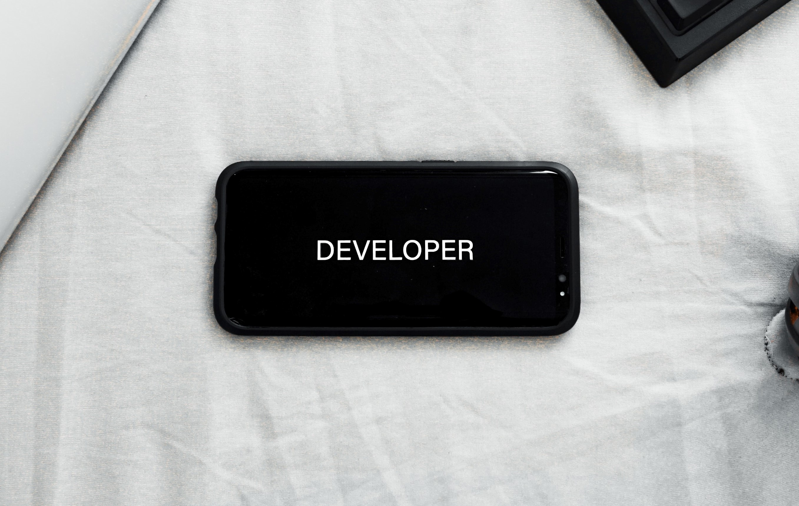
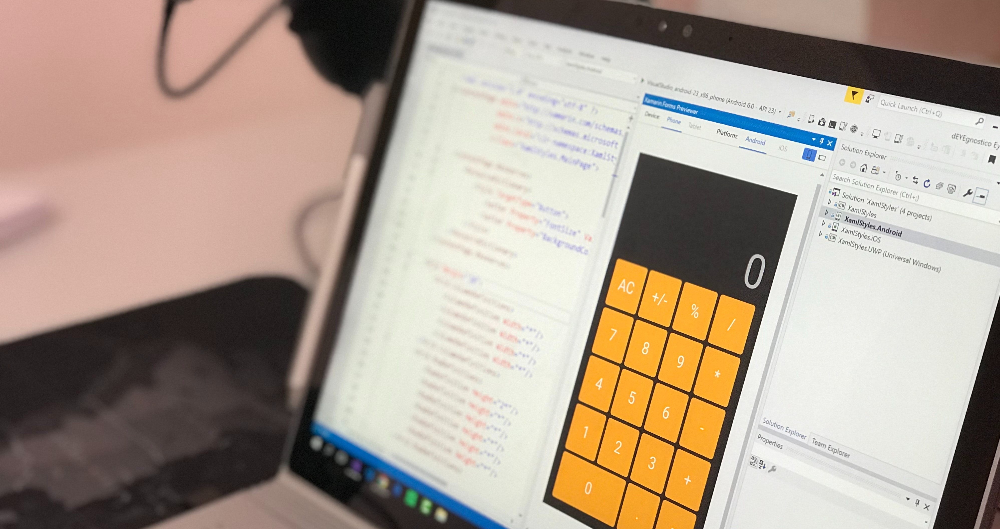

Intro

We’ve all been there…a blank slate can be a very scary, overwhelming roadblock.
“Is coding for me?
How am I ever going to get to a point where coding comes easy?
When will I be able to use this
new
skill to complete a finished project?”
Think about it—first you have to plan, then you have to learn, then you have to be good enough to
create. But before you learn, you have to decide what it is you’re going to learn, and you need to have
a great understanding that the thing you’re learning is going to pay some sort of dividend when all is
said and done.
On the most basic level, coding is how we communicate with computers, and
what we use to build and run websites, apps, video games, and more. Learning to code is like
learning how to speak and write in a particular language; a computer’s language.
Since you're thinking how complex code can get, you might be intimidated every time you see a code
block like this:
i = 0;
while (!deck.isInOrder()) {
print 'Iteration ' + i;
deck.shuffle();
i++;
}
print 'It took ' + i + ' iterations to sort the deck.';
Learning this piece of code is pretty simple when you have covered the basics, it only takes a few
hours or so to grasp the concepts of the language and develop a program that contains code more
advanced than this!
Getting Started
First choose a path you would be like to work and progress on, and then choose a language and start
out with the most basic hello world programs.
Learn online with the links refer to the last page or try it on your machine with an IDE or an
editor like Atom or Visual
Studio Code
Soon enough you would learn the fundamentals of programming such as loops, arrays and data
structures.
When you choose to pursue learning another language later on you will find it very easy and familiar
to code as well. Next would be to learn frameworks and libraries and code projects implementing all
you have learnt.
print 'Hello World!'
a = 5;
print a+5;
This is a much easier example to start programming with,
always go step by step and gradually you'll improve at the concepts.
Check out the other pages to get to know more about languages and good practices for getting started
with programming.
Which languages
do I start with?

There are many platforms and job types to choose from when you start with programming, the following
is in demand and is a good starting point:
Front end / Web
HTML/CSS/JS
So many jobs are related to the web these days, you can’t go wrong being familiar with these
“backbone” technologies before moving onto a framework or library. This is the easiest path to your
first junior development position.
Back End
Python
Python is used in so many applications, from web development, to data science, machine learning, AI,
game development, quick scripts, and is even an embedded language in many applications including
PostgreSQL
C++
C++ is a general-purpose language. It well deserves the widely acknowledged nickname "Swiss Pocket
Knife of Languages." It is very fast, well-structured and secure compared to its predecessor C. It is
still used as critical parts in many systems of today
PHP
PHP is a programming and scripting language to create dynamic interactive websites. It is a server side
scripting language that is embedded in HTML. It is used to manage dynamic content, databases, session
tracking, even build e-commerce sites.
Databases
SQL
Structured Query Language is used in interacting with RDBMS
(Relational Database
Management
Systems)
like Microsoft SQL Server, Oracle, MySQL, and PostgreSQL. Learning datastructures and
algorithms are very important to be a backend or full-stack developer.
Specailites
Java / .NET / Mobile Apps / AI / Machine Learning
These fields have heavy academic principles involved, not just software development skills. It is
recommended for people who have a strong interest in AI / Data Science / Robotics, etc. where more
exposure to that path is preferred.
Good Coding Practices

If you've made it so far means you're getting started on coding, good luck :)
Here are some
things to keep in mind that will you help you to be a better programmer.
Plan
While it is often tempting to jump straight into your editor and start coding, a bit of planning can go
a
long way.
- It gives you solid goals to work towards
- Reduces the amount of "wasted" code
- Reduces code changes
Practice Dryrunning / Debugging
This is essential to learn how the code is interpreted and what is the actual process occuring behind
the scenes.
- It helps with debugging
- Keep track of variables
- Optimize the process of the program
Use clear naming
This is the most basic concept of programming, as code gets changed down the line or by someone else
this is absolutely required to make our code easier to read and understand. Make it as descriptive as
possible.
- Helps enforce separation of concerns
- It makes it easy to quickly skim over code, saving time
- Code becomes easier to maintain or update
Use version control
Source control is a marvellous thing. It's a backup of your code, allows you to track changes, and let's
you quickly roll back in case of any circumstance occuring.
Not to mention it makes life much, much easier when working as part of a team.
- Keeps a backup of every version of code "checked in"
- Easy to share code and track changes made by others
- This will not only be helpful for yourself but your teammates as well.
miscellaneous

Here are few links where you can get started with coding.
All the best, have fun!
Progate -
Learn basics and fundamentals of through interactive learning
W3 Schools -
Gives detailed lessons on syntax of the language
Mozilla Developer Web Documents -
Documentation and resources made by developers can be found here
Credits:
Images:
Unsplash (unsplash.com)
Icons:
Font Awesome (fontawesome.io)
Other:
jQuery (jquery.com)
Responsive Tools (github.com/ajlkn/responsive-tools)
Sass CSS (sass-lang.com/documentation/syntax)
Bootstrap (getbootstrap.com)